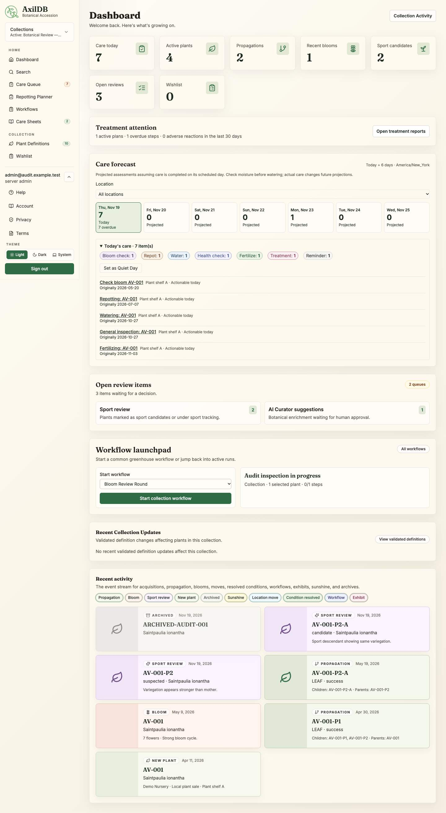
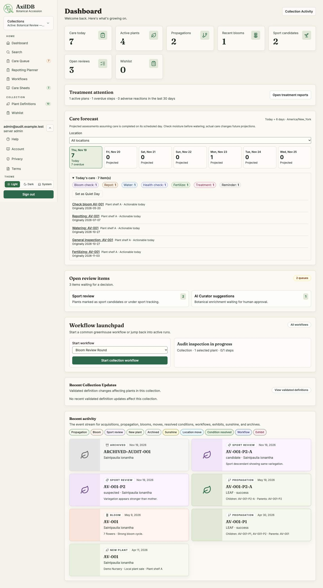
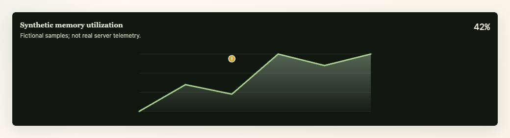
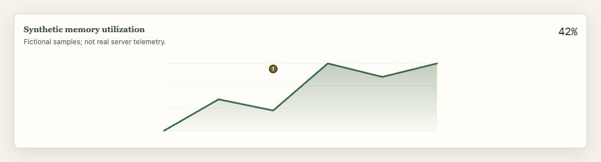
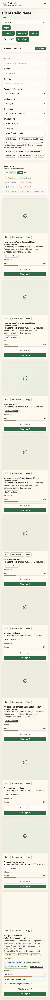
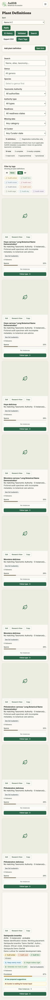

Implemented light-mode refinement using the owner-approved Botanical Charcoal design precedent. Eight consolidated findings; actual fictional local fixtures; no production deployment.
This small Git-tracked report retains representative comparisons. The complete offline gallery is kept outside Git to avoid large deployment downloads:
/Users/dcurry/.codex/visualizations/2026/10/22/01a16439-2af8-7021-8687-9b642a4e911e/axildb-light-mode-2026-11-19/visual-review.html
Findings · Final palette · Validation and limits · Coverage






Production build/TypeScript and shared-component lint pass. Existing splash lint issue is documented. Browser evidence includes actual care operations, mocked Magic Fill approvals/tag editing, image uploads, theme switching and responsive checks. This is scoped verification, not full accessibility certification.